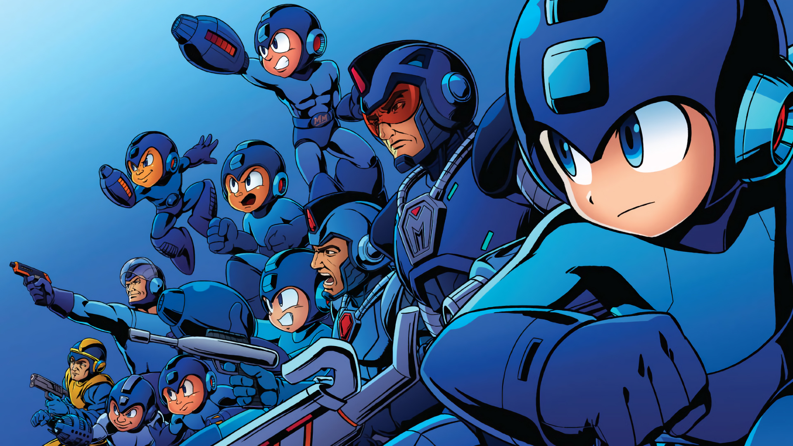

About Mega Man
Mega Man is humanity's champion. When an evil doctor tried to wreak havoc, the little blue robot got voluntary weaponized to fight this menace and restore peace.
Different versions of Mega Man throughout all his games.
Mega Man trivia
- He has an arm cannon.
- He has a strong sense of justice.
- He's beaten Dr. Wily 11 times!